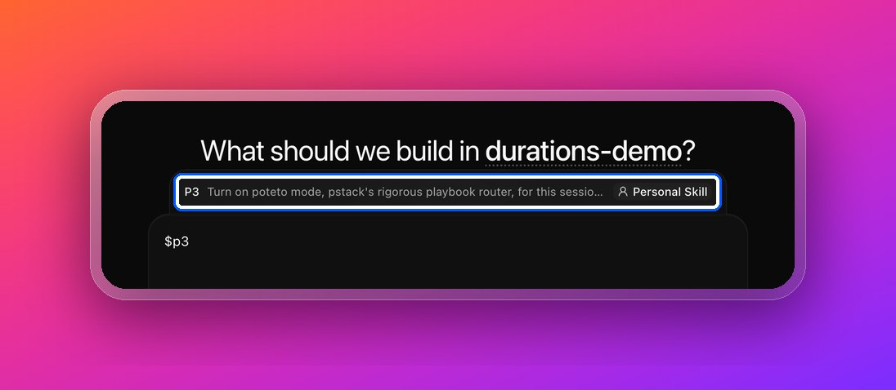
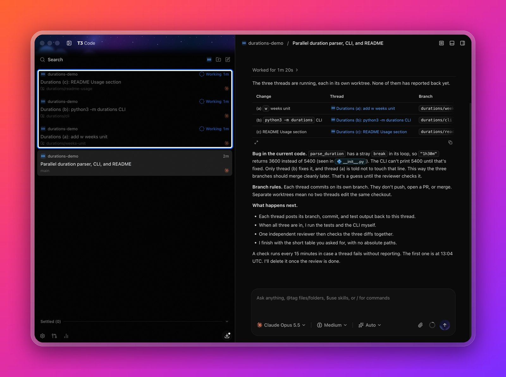
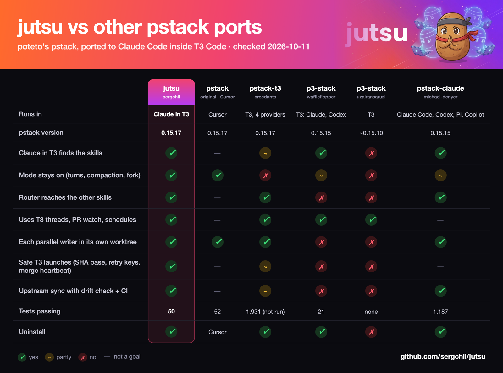

How it works
Type
$jutsuand your task in a T3 thread. In plain Claude Code, type/jutsuand your task.jutsu picks the matching pstack playbook, such as bug fix, feature, refactor, getting a PR to merge, or an overnight run. Then it follows the playbook's steps.
It proves the work on the real thing, such as tests, the browser, or a simulator, before it says done. Poteto mode stays on for the whole thread until you type
/jutsu off.
Made for T3 Code
In T3, jutsu uses T3's own tools: parallel threads in their own worktrees, PR watching, schedules, the browser, and simulators.

$jutsu in T3's skill picker.
Use it
- Needs
- Claude Code 2.1.292 or newer, and Python 3.9 or newer for the installer. T3's thread, PR, and schedule tools need T3 Code nightly from 2026-10-03. Without T3, jutsu runs in plain Claude Code.
- Start
$jutsu fix the flaky login testin a T3 thread- Stop
/jutsu off- Models
/jutsu:setup-pstackpicks the model and effort for each role- Update
git pullin the jutsu folder- Remove
./uninstall.shremoves everything jutsu added. Your repos are not touched.
Compared with other pstack ports

Built on pstack
pstack and poteto mode are Lauren Tan's work. The playbooks, the principles, and the way of working are hers. jutsu only connects them to Claude Code and T3 Code. To learn pstack itself, read her guide.